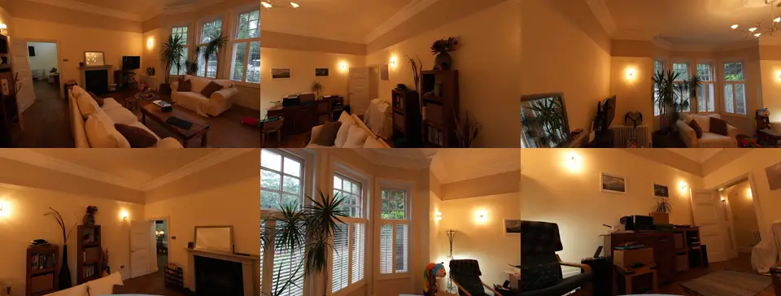
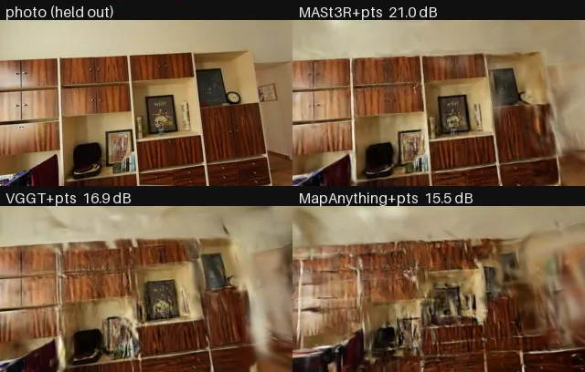

A room from six photos
A small study on public data. How good is a Gaussian splat of a room when you have only 6 to 12 photos and no camera poses?
Input
Two rooms of the Zip-NeRF set, “london” and “berlin”. From each, 6, 9 or 12 photos go in. 24 other photos are held out for the score.

Pose models
A pose model gives the camera poses and a point cloud. Then gsplat trains the splat with the same recipe for all (MCMC, 2,000 steps). I compared six pose models in seven setups, and one baseline.
| Poses from | PSNR (dB) | SSIM | LPIPS |
|---|---|---|---|
| MASt3R-SfM | 18.80 | 0.688 | 0.514 |
| InstantSplat (baseline) | 18.42 | 0.645 | 0.499 |
| VGGT | 17.51 | 0.644 | 0.547 |
| YoNoSplat, end to end | 16.65 | 0.605 | 0.570 |
| MapAnything | 16.54 | 0.610 | 0.586 |
| AnySplat, end to end | 15.96 | 0.570 | 0.590 |
| MapAnything, AnySplat start | 15.83 | 0.568 | 0.597 |
| Depth Anything 3 | 15.03 | 0.577 | 0.631 |
On the same photo sets, MASt3R beats VGGT by 1.2 dB and MapAnything by 2.4 dB. MASt3R and InstantSplat are level: the gap is inside the noise.

Camera path
Most floaters in a fly-through came from the path, not from the splat. A loop path looks at the ceiling and corners, where no photo looked. In its worst frame, 0 % of the pixels showed surface that a photo saw.
The fix: a path planner that stays inside the photo cameras and turns toward what the photos saw. Its worst frame in the london room: about 60 %.
Generated views
A diffusion model (Stable Virtual Camera) makes 126 extra views from the photos, also of the ceiling and the floor. gsplat then trains on real and generated views.
At 6 photos, the held-out score goes up by 1.7 dB in london (20.1 to 21.8) and 1.3 dB in berlin (14.8 to 16.1), against the same recipe without generated views. At 12 photos there is no gain. What no photo saw is invented, not measured, so the ceiling looks clean but is not true to the room.
Credits
Data: Zip-NeRF (Barron et al.), CC BY 4.0. Poses: MASt3R-SfM, CC BY-NC-SA 4.0. Training: gsplat, Apache 2.0.
Generated views: Stable Virtual Camera. This Stability AI Model is licensed under the Stability AI Non-Commercial License, Copyright © Stability AI Ltd. All Rights Reserved. Powered by Stability AI.
A personal, non-commercial study.